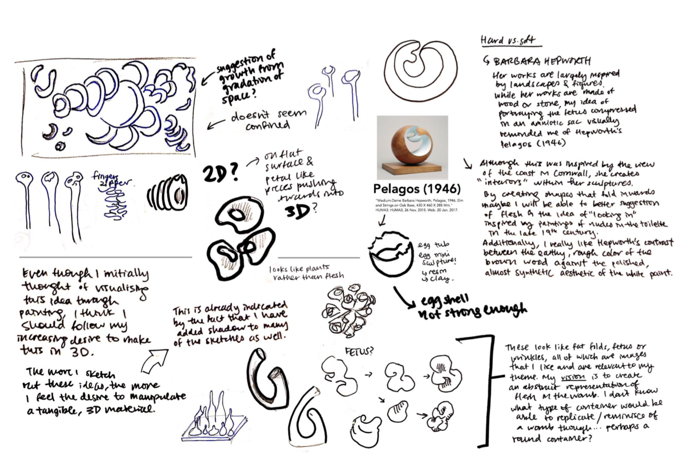
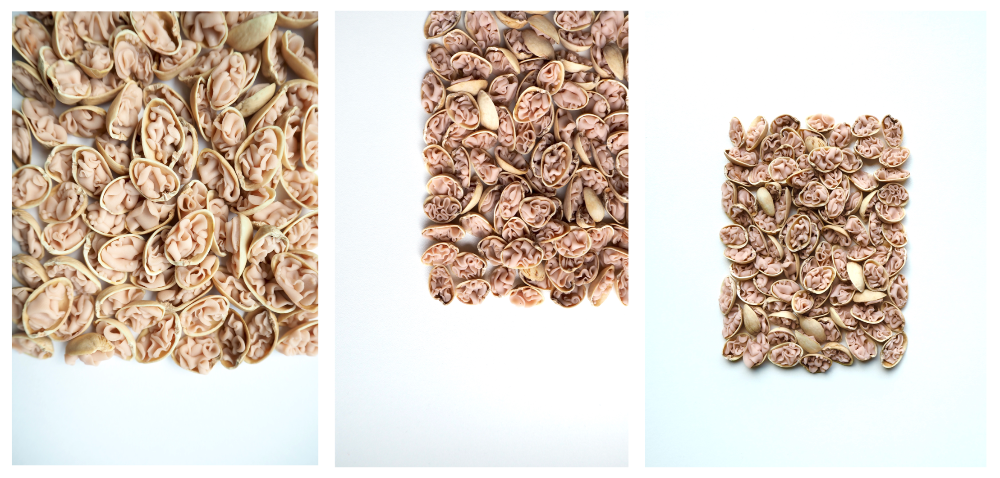
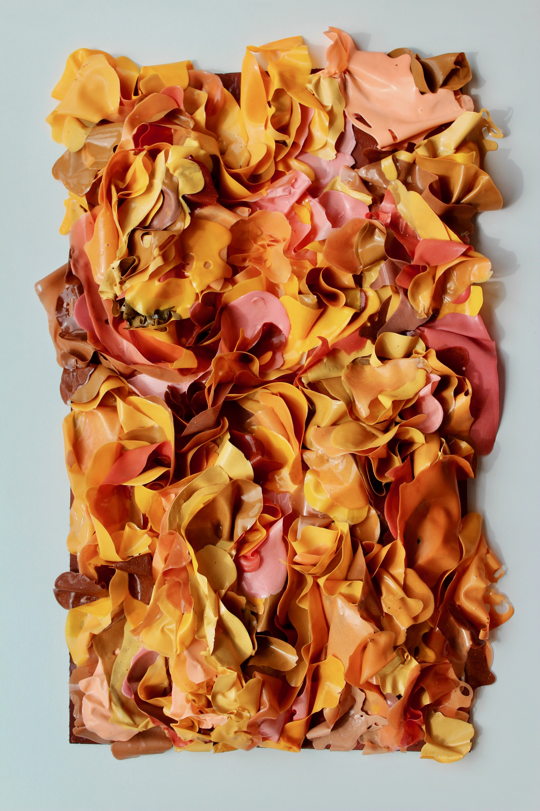
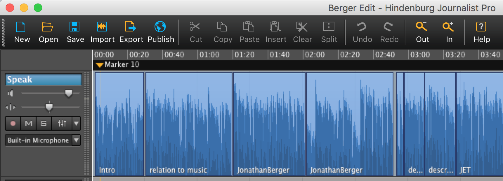

CONCEPT
I grew up in hong kong, one of the densest cities. I have always been fascinated by the most basic of containers, our skin, and how its compression can simultaneously represent confinement, intimacy and adaptability.
INVESTIGATION OF GROWTHS IN CONFINED SPACES
One night I ate a bowl of pistachios and I imagined making flesh-like folds in the shells.
PRODUCT
This abstract representation of flesh in the womb reflects the movement of the masses, how we are contained, and how our containment increases our tendency to order our environment.
SKINS
Contained spaces can produce feelings of warmth (figuratively and literally) via close proximity. "Skins" communicates the movement, diversity and delicacy of the flesh. I experimented with glue and paint, pouring mixtures in different patterns, allowing individual strips to dry on plastic sheets before weaving them into the three dimensional form.
Exhibited in Hong Kong and Stanford Art Gallery.
BRADEN STORYTELLING GRANT PODCAST
I am constantly on my screen, as a computer scientist and a visual artist. In many ways I am blind to the physical world because I only see it. What happens when we block off sight? What is revealed?
I interviewed researchers, expert echolocators, Professors and engineers to learn more about sound and its importance. I recieved a university grant to pursue this investigation summer of 2018. The podcast is published on Stanford Storytelling Project under Grant Winning Documentaries.
Learning some Hindenburg in the process:
READING MARKS
When reading, I like drawing along the way. It encourages me to notice symbolism and imagery. I also build stronger connections between prominent ideas when making my own visualisations.
HOMEGOING BY YAA GYASI